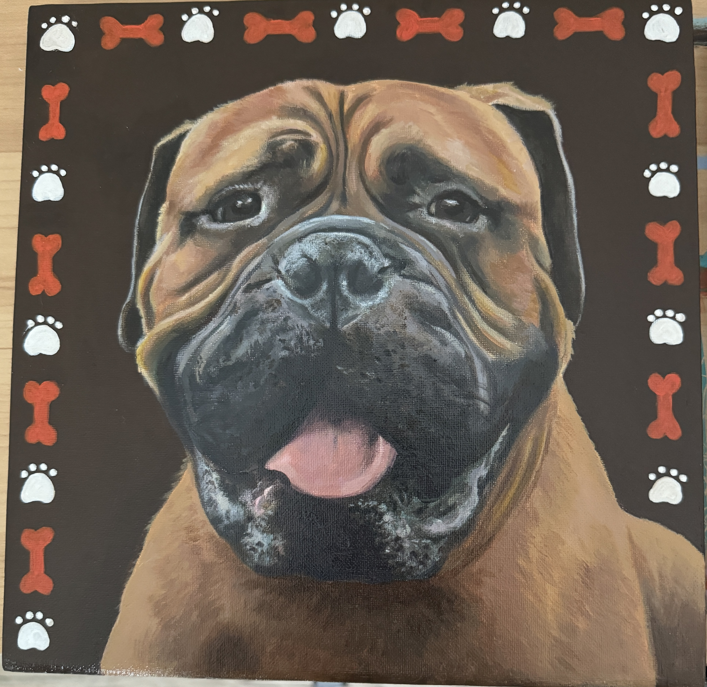
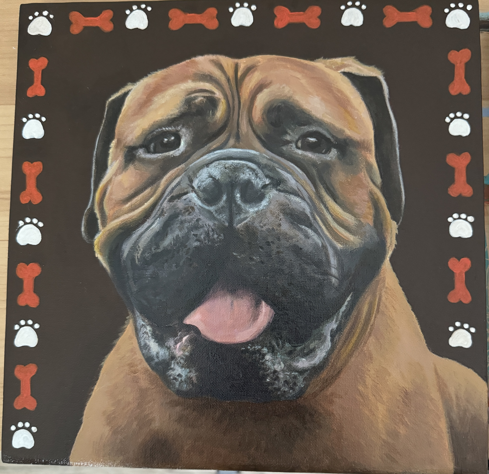

Turn Memories Into Timeless Art
Hand-crafted pet portraits with soul
Each portrait is lovingly created by hand using premium artist-grade materials. I capture not just your pet's likeness, but their unique personality and spirit that makes them special to you.
 

Ready to Preserve Your Pet's Personality?
Each portrait is carefully crafted to capture your pet's unique personality and spirit.
Custom portraits starting at $299
Premium Materials
Professional-grade paints and archival paper ensure your portrait lasts for generations.
Free Shipping
Your portrait is carefully packaged and shipped to your door free of charge.
Satisfaction Guaranteed
Your satisfaction is our top priority, ensuring you'll love your custom portrait.
Meet Shelby
My journey as a pet portrait artist began with a simple desire to capture the unique personalities of our beloved companions. What started as a hobby has blossomed into a passion, allowing me to combine my love for animals with my artistic talents.
Each portrait I create is more than just a painting – it's a celebration of the special bond between pets and their families. I pour my heart into every brushstroke, ensuring that each piece captures not just the physical likeness, but the true essence of your pet's personality.
I believe that every pet has a story worth telling, and I'm honored to be able to help tell those stories through my art. Whether it's capturing the playful spirit of a puppy, the dignified presence of an older dog, or the mysterious charm of a cat, each portrait is a unique tribute to a beloved family member.
The Artistic Journey
Initial Consultation
Share your favorite photos of your pet, along with any specific details about their personality and special features you'd like highlighted.
Final Review
You'll receive photos of the completed portrait for your review and approval before shipping.
Delivery
Your finished portrait is carefully packaged and shipped to your door, ready to be displayed and cherished for years to come.